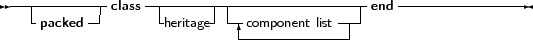
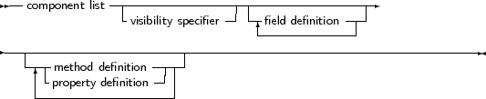
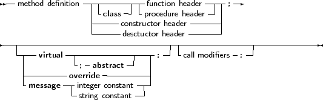
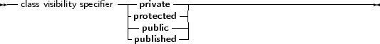

The prototype declaration of a class is as follows:
_________________________________________________________________________________________________________Class types




___________________________________________________________________
As many private, protected, published and public blocks as needed can be repeated. Methods are normal function or procedure declarations. As can be seen, the declaration of a class is almost identical to the declaration of an object. The real difference between objects and classes is in the way they are created (see further in this chapter). The visibility of the different sections is as follows:
In the syntax diagram, it can be seen that a class can list implemented interfaces. This feature will be discussed in the next chapter.
Classes can contain Class methods: these are functions that do not require an instance. The Self identifier is valid in such methods, but refers to the class pointer (the VMT).
Similar to objects, if the {$STATIC ON} directive is active, then a class can contain static fields: these fields are global to the class, and act like global variables, but are known only as part of the class. They can be referenced from within the classes’ methods, but can also be referenced from outside the class by providing the fully qualified name.
For instance, the output of the following program:
{$mode objfpc}
{$static on} type cl=class l : longint;static; end; var c1,c2 : cl; begin c1:=cl.create; c2:=cl.create; c1.l:=2; writeln(c2.l); c2.l:=3; writeln(c1.l); Writeln(cl.l); end. |
will be the following
2
3 3 |
Note that the last line of code references the class type itself (cl), and not an instance of the class (cl1 or cl2).
It is also possible to define class reference types:
_________________________________________________________________________________________________________Class reference type
___________________________________________________________________
Class reference types are used to create instances of a certain class, which is not yet known at compile time, but which is specified at run time. Essentially, a variable of a class reference type contains a pointer to the definition of the speficied class. This can be used to construct an instance of the class corresponding to the definition, or to check inheritance. The following example shows how it works:
Type
TComponentClass = Class of TComponent; Function CreateComponent(AClass: TComponentClass; AOwner: TComponent): TComponent; begin // ... Result:=AClass.Create(AOwner); // ... end; |
This function can be passed a class reference of any class that descends from TComponent. The following is a valid call:
Var
C : TComponent; begin C:=CreateComponent(TEdit,Form1); end; |
On return of the CreateComponent function, C will contain an instance of the class TEdit. Note that the following call will fail to compile:
Var
C : TComponent; begin C:=CreateComponent(TStream,Form1); end; |
because TStream does not descend from TComponent, and AClass refers to a TComponent class. The compiler can (and will) check this at compile time, and will produce an error.
References to classes can also be used to check inheritance:
TMinClass = Class of TMyClass;
TMaxClass = Class of TMyClassChild; Function CheckObjectBetween(Instance : TObject) : boolean; begin If not (Instance is TMinClass) or ((Instance is TMaxClass) and (Instance.ClassType<>TMaxClass)) then Raise Exception.Create(SomeError) end; |
The above example will raise an exception if the passed instance is not a descendent of TMinClass or a descendent if TMaxClass.
More about instantiating a class can be found in the next section.